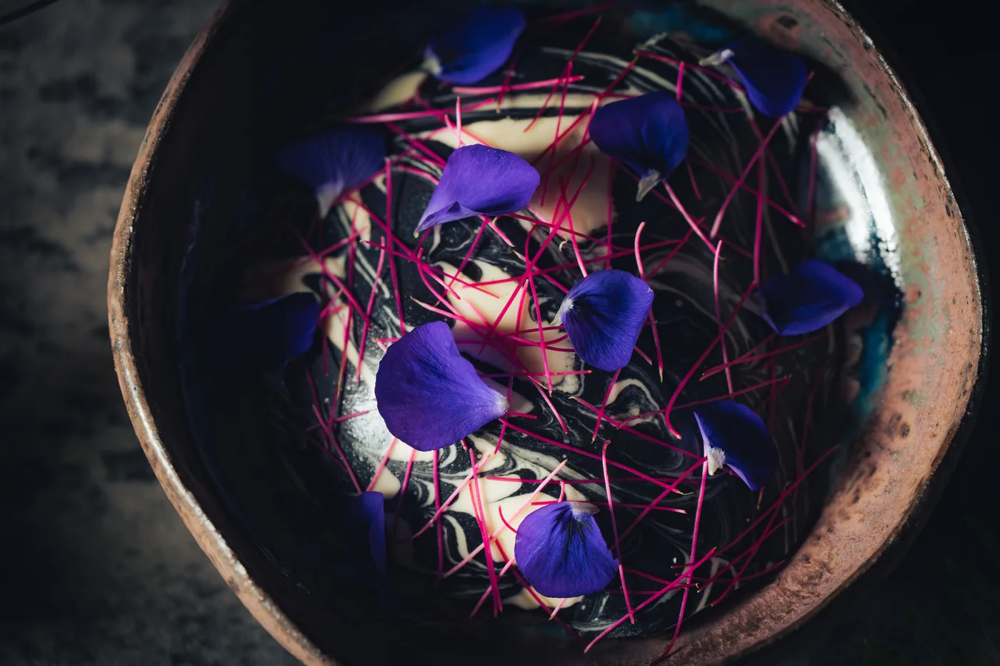
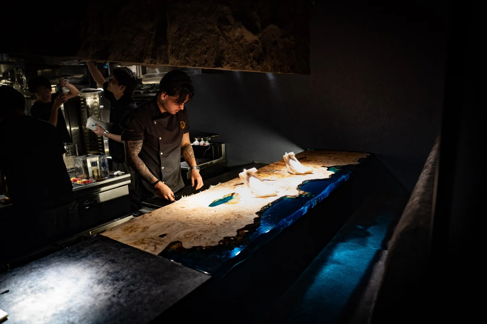

この後ご予定がある夜に
ショートコース
全5章・テーブル席・1〜8名
「この
14,800税込
空席を見る

銀座 ETHICA | 二ツ星MAZ出身シェフのイノベーティブ（伝統や国境を越え、自由な発想と技術で生まれる新たな食体験）・ミシュラン3年連続掲載

Philosophy
メニューに
時空の
Cenote
銀座に
大地は、
青い
水面＝いま・銀座コーヒー・紅茶
1皿目、38億年前
最初の
5皿目、2億年前
恐竜の
7皿目、500年前
500年前、
ETHICA コレクション・2026年秋の
Innovative Plates
ETHICAの
単に
その
を





Executive Chef
エグゼクティブシェフは、
MASAO ANDRÉS MATSUNAE GUZMÁN
Culinary Philosophy

ETHICAが
チュイルや
一般的な
野菜などの
すべての
The Cave
岩壁に



Courses
ミシュランガイド東京 3年連続掲載
迷われたら、
この後ご予定がある夜に
全5章・テーブル席・1〜8名
「この
14,800税込
空席を見るはじめての方に
全8章・テーブル席・1〜8名
地球46億年の
19,800税込
この旅の空席を見る誕生日・記念日に・2名〜
全9章・テーブル席・2名〜・メッセージプレート付き
グランド・コレクションの
25,200税込
記念日コースの空席を見る
デート・記念日に・1〜2名
全9章・キッチンの
キッチンの
27,800税込
カウンターの空席を見る
会食・接待に・2〜4名
全9章・キッチンの
キッチンの
29,800税込
個室の空席を見るベジタリアンの方に・1〜8名
全8章・テーブル席・1〜8名
ETHICA の
19,800税込
空席を見る特別な夜に
全9章・テーブル席・1〜8名
コレクションの
24,800税込
空席を見る料金は
※
Q&A
ETHICA の
ショートコース
手描きの
キッチンの
料理に
アレルギーは、
はい。
スマートカジュアルで
クレジットカード
空席が
20名様までの
Access
ミシュランガイド東京 3年連続掲載
この